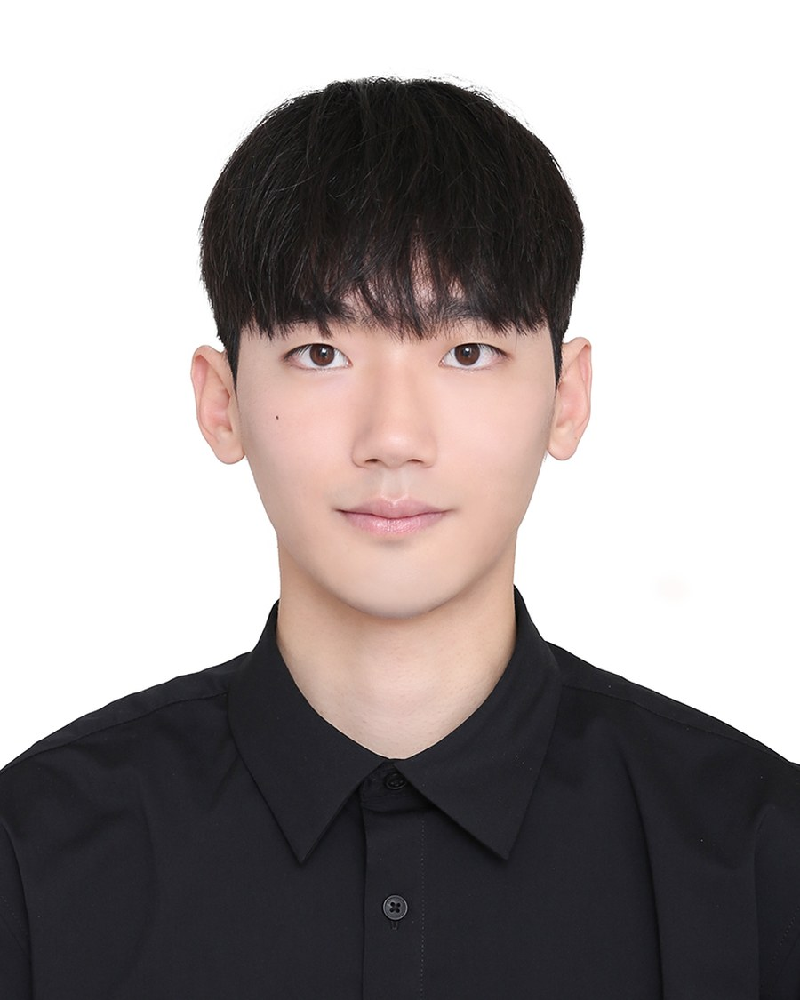

Satellite Data Engineering
Building large-scale processing pipelines that turn raw multi-sensor imagery into harmonized, analysis-ready global geospatial products.
Hi! I'm SooHyun Yang, an Earth Observation & Geospatial AI researcher dedicated to processing, constructing, and analyzing large-scale satellite datasets.
In my research, I have focused on handling massive satellite imagery, building pipelines for global-scale data construction, and analyzing spatiotemporal trends to capture how our world is changing.
Through my Pixel-to-Planet philosophy, my vision is to scale these data-engineering and modeling foundations to explore earth surface changes and object detection. I want to leverage advanced computer vision to automate surface monitoring and detect dynamic shifts across our changing planet.
Let's map our changing Earth together!

Building large-scale processing pipelines that turn raw multi-sensor imagery into harmonized, analysis-ready global geospatial products.
Designing spatiotemporal architectures for geospatial gap filling, reconstruction, and predictive modeling of land surface dynamics.
Applying semantic segmentation and object detection to automate crop mapping and detect dynamic land surface changes.
Sep. 2025 – Feb. 2027
University of Seoul, Seoul, South Korea
Mar. 2020 – Aug. 2025
University of Seoul, Seoul, South Korea
† Equal contribution.